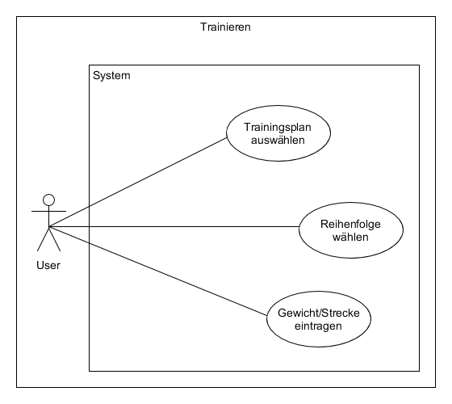
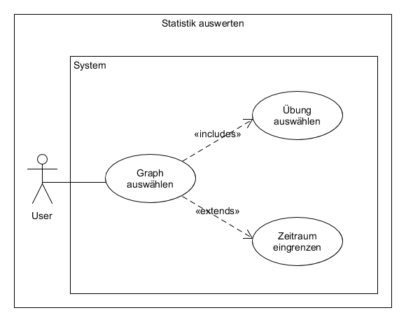

class: center, middle # Xtreme Xercising ### Mobile Anwendung zur Erstellung, Ausführung und Auswertung von Trainingsplänen --- # Ziele der Anwendung #### Trainingsplanerstellung - Einfach und schnell eigene Trainingspläne erstellen und Übungen hinzufügen - Übungen sind alphabetisch, nach Kategorien und Muskelgruppen sortierbar -> erleichtert die Suche - Neue Übungen können selbst erstellt werden #### Trainingsdurchführung - beliebige Trainingsreihenfolge (besonders wichtig im Fitnessstudio) - Eingabe der Leistung über Tastatur oder mit Plus- und Minus-Button in 1.25 kg Schritten (besonders schnell) - Progress-Bar für das Training zur Motivation --- # Ziele der Anwendung #### Fortschrittüberwachung - Allgemeine Daten: z.B. Anzahl aller absolvierten Trainingseinheiten, Anzahl aller durchgeführten Übungen usw. (zur Übersicht) - Übersicht für eine gewählte Übung aus einem Trainingsplan - Maximalgewicht: Höchstes geschafftes Gewicht einer Übung - Maximalleistung: Höchstes Ergebnis aus (Sätze * Wdh. * Gewicht) - Muskelgruppenverteilung: Prozentualer Wert für jede Muskelgruppen zur Überprüfung eines ausgewogenen Trainings --- # Use Cases #### Use-Case-Diagramm "Trainingsplan" <img src="Diagramme/Traininsplan.png" alt="drawing" width="500px"/> --- # Use Cases #### Use-Case-Diagramm "Trainingsplan bearbeiten" <img src="Diagramme/Trainingsplan_bearbeiten.png" alt="drawing" width="500px"/> --- # Use Cases #### Use-Case-Diagramm "Eigene Übungen erstellen" <img src="Diagramme/Eigene_Übungen_erstellen.png" alt="drawing" width="500px"/> --- # Use Cases #### Use-Case-Diagramm "Trainieren"  --- # Use Cases #### Use-Case-Diagramm "Statistik auswerten"  --- # Architekturen ´ - keine Serverarchitektur - nur Clientarchitektur - lokale Datenbank (dokumentenorientiert) auf dem Gerät --- # Verwendete Technologien - React Native - Visual Studio Code - Genymotion - GitHub - GitHub Desktop - npm (node.js) - Pouchdb --- # Konzepte - Jeder Bildschirm hat eigenen Ordner - In jedem Ordner ist der Hauptbildschirm die Hauptklasse - Wichtige Komponenten in eigenen Unterklassen - Datenbank im Ladebildschirm (dokumentenbasiert und keine Strukturvorgaben) --- # Lessons Learned - Anonyme Klassen mit Pfeil-Funktionen - State und Props - Promises - Erstellen eigener Komponenten - JSON-Format mit Javascript-Objekten - npm zum einfachen Verwalten von Paketen - Dokumentenbasierte Datenbank